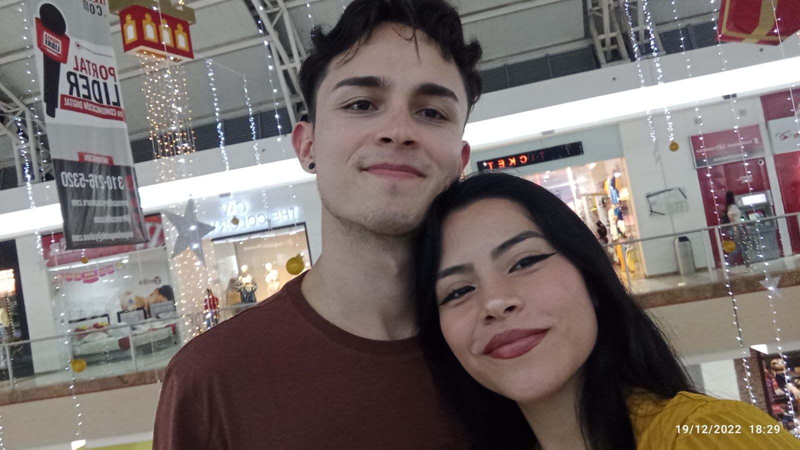

Nosotros
Nuesta historia comenzó de una manera que yo llamaría extraña. En cierto punto, creí que jamás se daría, que a lo mejor, seríamos amigos nada más... y realmente no me equivoqué, somos buenos amigos, pero no pude evitar enamorarme de ti.
Al principio, fue raro, lleno de muchos tropiezos y caídas, momentos en los que parecía imposible, pero verte, tenerte, besarte y sentir tu amor era motivante, tu apoyo, la paciencia y la resiliencia que tuviste conmigo, jugaron un gran papel y por eso, te agradezco.
Finalmente, ha pasado un año y yo solo puedo decirte que estoy feliz, que te amo, que incluso con los malos momentos, estoy agradecido de que estés aquí, que me ames, que estés enamorada de mi y seas mi chiquita.
üåÖüåÖüåÖüåÖüåÖüåÖüåÖüåÖüåÖ
Una camelada
Érase una vez, un alma que vagaba por la tierra sin un propósito en particular, su memorias eran brrosas y hasta cierto punto, estaba muerto en vida.
Un día, un alma más vieja le contó la historia de Camel, un camello cuya vida había sido similar a la suya al principio pero que un día se hartó de esa y decidió emprender rumbo, sin un destino claro, pero con una meta ímplicita, vivir. Le costó, fueron años duros, difíciles y con mucho sacrificio, no obtuvo nada particularmente bueno, pero aprendió mucho. Fue entonces cuando decidió cambiar el rumbo otra vez y buscar alguien que lo acompañase en el camino, y así fue, encontró amor y una familia, encontró una camelada.
Aunque escéptico al principio, aquella alma decidió seguir los pasos de Camel, y ha sido duro, aun se pierde mucho en su rumbo, pero no se ha rendido y en el camino, encontró un alma de apariencia chiquita, pero grande y hermosa como cielo, quizá no es la misma historia de Camel, pero seguro tendrá un final feliz.
¿Quieres tener una camelada conmigo?

